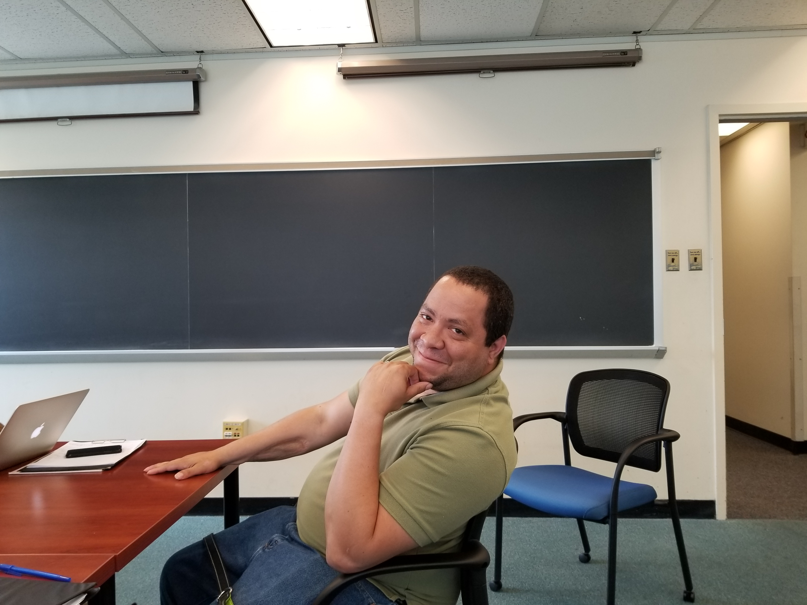
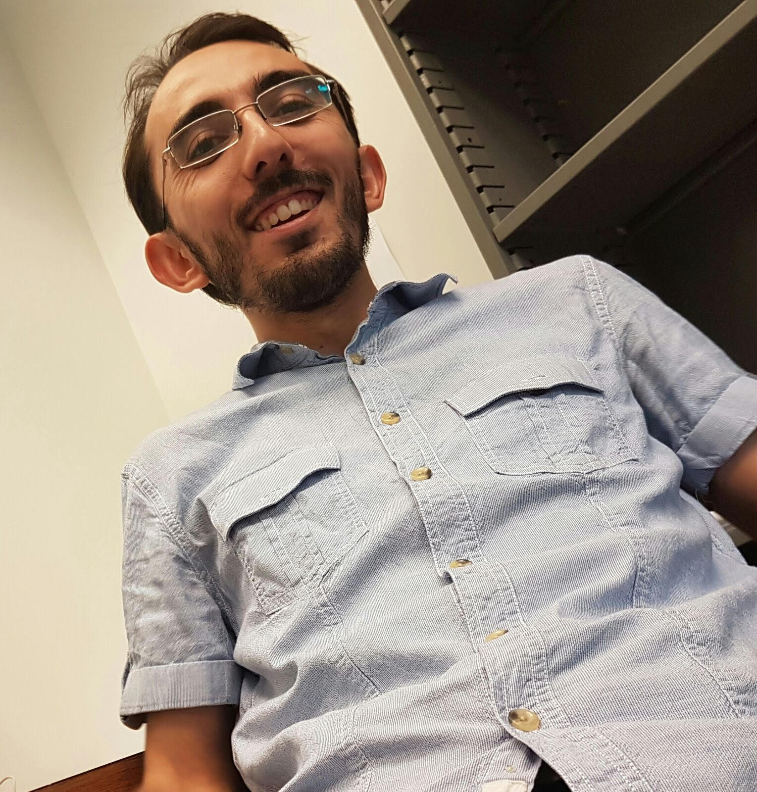
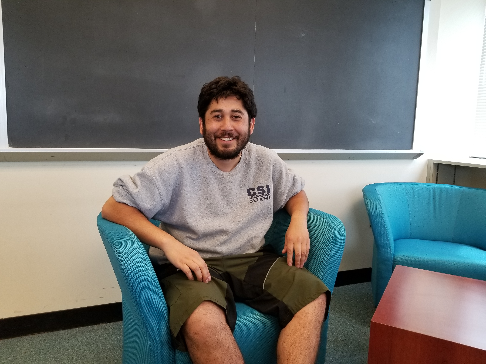

Team
Pancho - Current Members
The official website of Francisco-Javier Sayas and his team github.com/team-pancho
Allan Hungria
BS in Mathematics, Rutgers University, 2013
Research on HDG methods for elastic wave propagation
Expected Graduation: 2019
Shukai Du
BS in Mathematics, Wuhan University, 2012
MS in Mathematics, Wuhan University, 2015
Research in HDG methods for elastic and electromagnetic waves
Expected Graduation: 2020
Hasan Eruslu

BS in Mathematics, Bogazici University, 2012
MS in Mathematics, Bogazici University, 2015
Research in discretization of transient viscoelastic waves
Expected Graduation: 2020
Hugo Díaz-Norambuena
BS in Engineering Mathematics, Universidad de Concepcion, Chile, 2015
Expected graduation: 2022